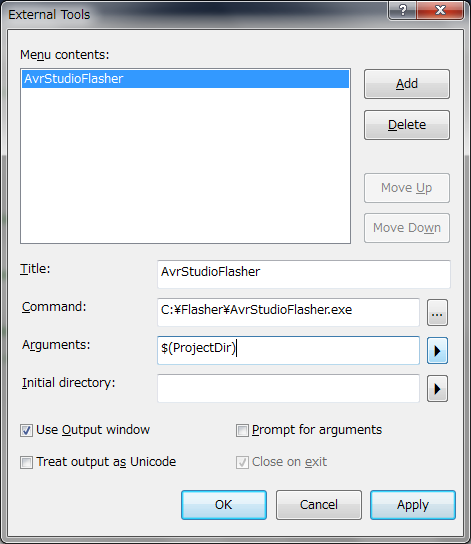

This is a small tool I made since I didn't find the thing I wanted. If there is an easy way to do it instead of this software, run for it but just send me a mail before so I can do the same!
- Oups, apparently there is a quite elegant way of doing that explained here. Still 1 advantage for my tool, it gets itself the type of mcu, you don't have to change it. But for memory :
- External tools >
- Command = "C:/arduino-0022/hardware/tools/avr/bin/avrdude.exe"
- Params = "-CC:/arduino-0022/hardware/tools/avr/etc/avrdude.conf -v -v -patmega328p -cavrispv2 -P\.COM1 -b57600 -D -Uflash:w:"$(ProjectDir)Debug$(ItemFileName).hex":i"
Moving out from
WinAVR (a great distribution) and its Programmer's Notepad a kinda limited software (... and I'm staying polite) to
AVR Studio 5 embedded in Visual Studio Shell. So great, nice, integrated and it's Visual Studio, the tool I use at work everyday of the week. Installation is fine, a few simple tutorials on how to use and you're in within minutes.
Ok, now how do I upload this magnificent blink code to my micro controller ? I do what ?
Tools > AVR Programming > Apply > Memories > Choose a file > Program ? And the window is modal ? You want me to do that each time ? No really, you're kidding, right ? Not Ctrl%20Shit%20P or simple shortcut ? I searched a little and seems it's not a trivial question since there's no nice answer that I could find. So let's open Visual Studio C#...
Download
Binary file %20 config file
http://code.google.com/p/alanarduinotools/source/browse/#svn%2Ftrunk%2FC_Sharp%2FArduino_Tools%2FAvrStudioFlasher%2FBinaries
or
AvrStudioFlasher.v1.0.0.0.zip
Source code
http://code.google.com/p/alanarduinotools/source/browse/#svn%2Ftrunk%2FC_Sharp%2FArduino_Tools%2FAvrStudioFlasher
How does it work ?
- Write your code
- Compile (important since the shortcut does NOT recompile before uploading)
- If it compiled fine, press Ctrl%20Shift%20P (or the shortcut you chose) and AvrStudioFlasher will run avrdude for you
The program is launched with as a parameter the path to the Visual Studio project (where the .avrgccproj is located). Once there, it will fetch the
makefile located in
Debug\ subdirectory. Inside it will find the name of the
.hex to search for and the type of MCU you're using in that project. Based on that info plus COM port and protocol (these are defined in the AvrStudioFlasher.exe.config) it runs avrdude (path to avrdude is also defined in the .config file).
Cant find avrdude
Says it can't find avrdude ? Well, I guess it's not in your PATH environment variable. If you understand this comment you most likely know how to fix it. Otherwise, just give the full path to avrdude in the config file. You might have to install the WinAVR tool chain to have the avrdude installed. XML config file will look like something like:
...
<add key="UploaderExe" value="C:\WinAVR\bin\avrdude"/>
...
Config file ?
An xml file named AvrStudioFlasher.exe.config that must be in the same directory as AvrStudioFlasher.exe. This is what it looks like by default:
<?xml version="1.0" encoding="utf-8" ?>
<configuration>
<appSettings>
<add key="ProgrammerProtocol" value="avrispv2"/>
<add key="COMport" value="COM1"/>
<add key="UploaderExe" value="avrdude"/>
<add key="Params" value="-p {mcu} -P {comport} -c {protocol} -U flash:w:"{hexfile}":i "/>
</appSettings>
</configuration>
HOWTO install ?
|  |
| The External tools window |
You need .NET Framework 3.5 to make this run. It's a basic console app, so you can recompile it in .NET 1.0 if needed I guess, knock yourself out.
- Put the files in some folder, say c:\Flasher
- Open AVR Studio 5
- Tools > External tools ...
- Pick a nice name
- The command is the path to the AvrStudioFlasher.exe
- Param is $(ProjectDir)
- Check the Use output console item
- Now you have a command you can run by clicking the new menu item you created in the Tools menu. Let's add a shortcut
- Tools > Options ... > Environment > Keyboard
- Pick the command Tools.ExternalCommand1 (1 is because it is the first on my computer, if you have 2 it's the second,...)
- In the Press shortcut key zone, press the shortcut you want (my case I press Ctrl%20Shift%20P)
- You're done!